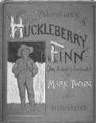
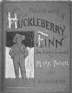

Ferguson's Guide to Navigating This Site

picture courtesy of "Mark Twain in His Times"
wanted first to illustrate the homes themselves from Clemens's perspective, and second to give concrete examples of the
effects of the homes on Twain's work. To me, the best (and most interesting) way to do this meant quoting only Clemens's
thoughts, and only those thoughts of Clemens's written for his personal letters, notebooks, and autobiography rather than
for contemporary publication or performance reasons. All text in quotes is Clemens's. Bracketed insertions of mine, which
occur in a few of the quotes, are bolded, as are my descriptions of the sources of the quotes.
When showing how Clemens's homes influenced each book of Twain's, I cited Clemens's quotes alone, rather than his
quotes plus specific instances from Twain's work. This is because some of Clemens's thoughts are reflected in Twain's
work too broadly to fully cite and all of Clemens's quotes here illustrate characters, situations, events, and ideas which
are immediately obvious as characters, situations, events, and ideas in Twain's work.
I organized this site into two parallel paths--one for Clemens's homes, and his descriptions of them, and the other for
Twain's works, and descriptions of life in specific homes by Clemens which illustrate influences on that particular work.
Clemens's homes and his descriptions of them are organized geographically and chronologically.

Clicking on the map of the U. S. and Europe on the main page will take you to a page consisting of that map, with each
location pinpointed, and photographs of the homes arranged in chronological order under the map.

By clicking on a photo, you are taken to the page for that home, consisting of its picture, its description by Clemens,
links to Twain's work which it influenced (if any), and links to the previous and next homes in chronological order. All
of the homes have pictures you can click on to go "inside" and see photos of and descriptions by Clemens of its interior.
Some of the homes have more detailed descriptions than others.
The second "path" goes straight through Twain's works. I have included here The Jumping Frog of Calaveras County, Innocents
Abroad, Roughing It, The Adventures of Tom Sawyer, Life on the Mississippi, The Adventures of Huckleberry Finn, A Connecticut
Yankee in King Arthur's Court, and Pudd'nhead Wilson. All of these are from ENAM 481C, with the exception of Jumping Frog,
which I included because it was Twain's first published "book". I didn't want to include things not published in Twain/
Clemens's lifetime, like his stories from The Devil's Race-Track, because it is unclear if and how Twain may have revised
them, and even if he wanted them published.


 



By clicking on a book (whose jackets are all on the main page) you can see how specific homes influenced specific works,
and can click on each influential home's "window" to see the descriptive page for that home. On each book's main page
are also links to the previous and next book, in chronological order.
At the bottom of every "home" page is a link back to the main page,

and at the bottom of every "book" page are links back to the main page and the map page.
Enjoy!
-KSK